Expand all Collapse all Establish a draw punisher before helping opponents draw, and keep protection available for Sheoldred. The revised list develops faster with Dark Ritual and Fellwar Stone, keeps Dread Presence for sustained value, and turns your own life gain into targeted damage through Vito. Peer into the Abyss is a turn-six-or-later finisher for this Bracket 3 plan, not a reason to race into an early two-card kill. The three Game Changers remain Opposition Agent, Orcish Bowmasters, and The One Ring. Establish and protect the engine Sheoldred, the ApocalypseFour mana turns every opponent draw into two life lost and every one of your draws into two life gained. Her deathtouch discourages ground attacks, but does not stop flying threats or removal. Prioritize keeping her alive over adding a redundant slow engine. Roaming Thronename Phyrexian. Sheoldred is a Phyrexian Praetor, so BOTH her triggers double — four life gained per card you draw, four lost per card they draw. It also doubles Psychosis Crawler and Scrawling Crawler. Lightning Greavesshroud, because she eats a removal spell the turn she lands otherwise. Swiftfoot Bootshexproof and haste when you need to target her. Mithril CoatFlash it onto Sheoldred in response to destruction or lethal damage. Indestructible does not answer exile, bounce, sacrifice, or sufficient toughness reduction; it is protection for specific threats, not a universal counterspell. Kaya's Ghostformone mana of insurance that beats exile as well as destruction. Make their cards cost life 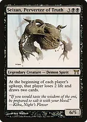Seizan, Perverter of TruthOn each player's upkeep, only that player loses two life and draws two. With Sheoldred, an opponent loses six from this trigger; you gain four after losing two, for a net gain of two. Their ordinary draw step is additional. The extra cards help opponents find removal, so deploy after a punisher. 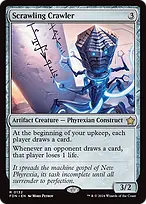Scrawling Crawlereveryone draws at your upkeep, and each of their draws costs an extra life on top. Sign in Bloodpoint it at an opponent. Two cards and two life from them, plus four more from Sheoldred. 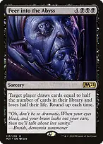Peer into the AbyssA seven-mana late-game knockout with Sheoldred: an opponent draws half their library, rounded up, and loses half their life, rounded up. The draw triggers resolve afterward. At 40 life and 70 cards in library, they fall to 20 and face 70 life loss from Sheoldred. Removal before Peer resolves can stop new Sheoldred triggers; removal after those triggers exist does not erase them. Hold this two-card kill until turn six or later for Bracket 3. 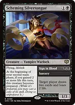Scheming Silvertongue // Sign in BloodA cheap flying blocker that prepares at the beginning of your second main phase if you gained at least two life that turn. You still pay BB to cast its prepared Sign in Blood copy. Sheoldred usually enables preparation, and Vito rewards using the draw on yourself. 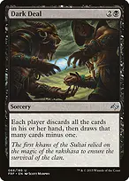Dark Dealeveryone dumps their hand and redraws one fewer. A pile of draw triggers, and it strips their held-up answers. 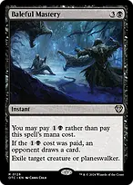Baleful MasteryFor two mana, exile a creature or planeswalker while an opponent draws. Choose the opponent receiving the card separately from the removal target. That draw fuels Sheoldred, but also gives them another card before the exile instruction finishes. Turn both sides of the draw engine into damage 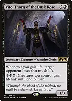Vito, Thorn of the Dusk RoseEvery separate gain from Sheoldred triggers two life loss against a chosen opponent. Your own Ring draws become offensive, and Gray Merchant or Exsanguinate creates a much larger single trigger. You can choose different opponents for separate triggers, but cannot split one trigger's life loss among them. This is finite drain, not an infinite loop. Orcish BowmastersEach opposing draw beyond the first in their draw step adds a damage trigger and amass. Seizan makes its active opponent draw twice in the upkeep, producing two Bowmasters triggers. Use the damage to clear small utility creatures while building an Army. Psychosis Crawlereach opponent loses one for every card YOU draw, and its body scales with your hand. Bloodletter of Aclazotzopponents lose double during your turn. Stack it with everything above and a single main phase is lethal. 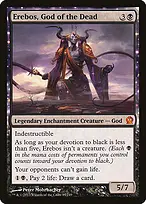Erebos, God of the Deadopponents cannot gain life at all, and he converts your life total into cards. Build toward a finishing drain Gray Merchant of AsphodelCount devotion as the entry trigger resolves. In a four-player game, devotion six normally drains each opponent for six and gains you eighteen; Vito can then make one opponent lose another eighteen. Reanimation and Witch of the Moors let you reuse this finisher. 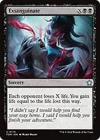Exsanguinatethe clean X-drain finisher, and it refills your life for the next one. Crypt Ghastdoubles every Swamp AND extorts on every spell you cast. 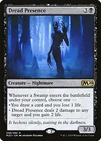Dread PresenceKept for repeatable value from Swamp entries: choose a draw and one life lost, or two damage and two life gained. Sheoldred turns the draw mode into a net life gain, while Vito converts either mode's resulting life gain into pressure. Urborg makes your other entering lands Swamps too. This is incremental value rather than burst ramp. Black Market Connectionsthree effects a turn, paid in life you are gaining back. 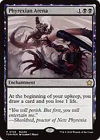Phyrexian Arenaa card a turn, and Sheoldred turns the life loss into a gain. 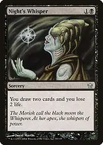Night's Whispertwo cards for two mana. Keep answers available while developing 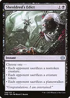Sheoldred's EdictEach opponent sacrifices one permanent of the chosen category. The nontoken-creature mode bypasses token fodder and hexproof, but opponents still choose among their eligible creatures. The token mode removes one token per opponent, not entire armies. Deadly Rollickfree with your commander out. Baleful MasteryFor two mana, exile a creature or planeswalker while an opponent draws. Choose the opponent receiving the card separately from the removal target. That draw fuels Sheoldred, but also gives them another card before the exile instruction finishes. Feed the SwarmA two-mana sorcery answer to an opposing creature or enchantment, paid for with life equal to its mana value. Withering Torment also covers enchantments; save these effects for permanents that shut down your engines. Damnationan unconditional wrath. Sheoldred is often the only creature you need. Sudden SpoilingTemporarily removes abilities and makes one player's creatures base 0/2. Combine it with blocking, Bowmasters damage, or Toxic Deluge. It is not a literal fog: counters and other power boosts can still let those creatures deal damage. Split second limits responses but does not remove abilities already on the stack. Imp's MischiefRedirect a spell that has exactly one target, such as targeted removal or a counterspell, to another legal target. It cannot steal ordinary untargeted tutors, change a spell's controller, or answer a nontargeting wipe. Account for the life payment. 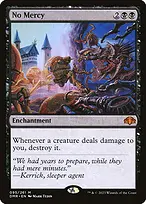No MercyDestroys a creature after it damages you. It discourages attacks but does not prevent damage, defeat indestructible creatures, or save you from a lethal hit. Sheoldred and your life gain help make surviving an attack possible. 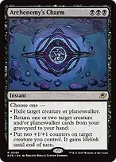Archenemy's CharmInstant exile for a creature or planeswalker, or recover up to two creature/planeswalker cards to hand. The lifelink mode can turn a safe Sheoldred attack into life gain and a Vito trigger. BBB makes colorless utility lands a real sequencing constraint, and this does not remove artifacts or enchantments. 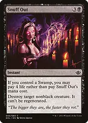Snuff OutWith a Swamp, pay four life instead of mana to destroy a nonblack creature while holding mana for your engine or protection. It cannot kill black or indestructible creatures. The cheaper interaction gives up broad permanent coverage, so keep Zuko's Exile and Ugin available for difficult permanents. Karn, the Great CreatorDisables activated abilities of opposing artifacts, including mana rocks and Equipment equip abilities. Liquimetal Torque can extend this to an opposing nonland permanent for the turn. His minus can retrieve an artifact you own in face-up exile; standard Commander does not supply an outside-the-game wishboard. Dauthi Voidwalkerunblockable, exiles what they would bury, and steals their best card. Opposition Agentflash him onto a fetchland or tutor and keep what they find. Deploy early and recover efficiently Sol Ringturn one. Jet MedallionReduces the generic portion of black spells by one. It does not reduce artifact costs, colored symbols, Dark Ritual, or Archenemy's Charm. It helps cast Sheoldred and leaves more mana for follow-up plays. Arcane Signetfixing that this deck barely needs, and acceleration it does. Mind Stoneramp early, a card later. Dark RitualOne card supplies two net extra black mana immediately. Two Swamps plus Ritual can cast Sheoldred on turn two, but a turn-three deployment with an extra black mana for protection is often safer. It is one-shot acceleration, not a permanent mana source. Fellwar StoneTwo-mana acceleration usable the turn it enters. It only produces colors an opposing land could produce, so do not assume it supplies black for Archenemy's Charm. Unlike a searched Swamp, it does not improve Coffers or trigger Dread Presence. Liquimetal TorqueAn early rock that also turns a nonland permanent into an artifact until end of turn. With Karn, that can shut off its activated abilities. It cannot target lands and does not itself remove anything. Expedition Mapfinds Cabal Coffers or whichever utility land matters. Beseech the MirrorBargain a spare token, artifact, or enchantment to find and cast a card of mana value four or less, such as Bloodletter, Roaming Throne, or The One Ring. It searches the library, so cannot retrieve Sheoldred from the command zone. Peer can be found but must go to hand and be paid for separately. Reanimateone mana for the best creature in any graveyard. Animate Deadthe second copy. 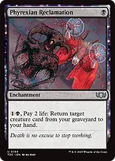Phyrexian ReclamationBuys back a creature card for two mana and two life. To recover Sheoldred this way, deliberately leave her in your graveyard instead of moving her to the command zone. That avoids commander tax on the later hand cast but exposes her to graveyard exile. Convert accumulated resources into a win The One RingProtection from everything lasts until your next turn when you cast it, protecting you rather than your permanents. Sheoldred gains two life per card you draw; Vito turns those gains into targeted loss. Burden-counter life loss still happens, so track it rather than assuming the engine is free. Torment of HailfireSpend Coffers or Nykthos mana to pressure the entire table. Opponents can sacrifice nonland permanents or discard instead of losing life, so count their resources before treating an X value as lethal. Bloodletter doubles the life-loss choices during your turn. Teferi's Puzzle BoxOn each player's draw step, their hand goes to the bottom and they draw that many cards. Sheoldred and the Crawlers punish opponents' replacement hands. Players can respond to its trigger after their normal draw; it is pressure, not a lock, and your own carefully held answers can disappear into your library too. 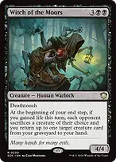Witch of the MoorsSheoldred normally enables this end-step trigger with your draw. Each opponent sacrifices a creature and you recover a creature card, making Gray Merchant a repeatable threat. The trigger checks that you gained life both when it triggers and when it resolves. 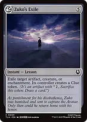Zuko's ExileFive-mana instant exile covers an artifact, creature, or enchantment and gives its controller a Clue. Keep this broad coverage after trimming the slower artifact-answer package. Cracking an opposing Clue later feeds your draw punishers. 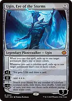Ugin, Eye of the StormsExpensive but broad coverage against colored permanents, with the initial exile triggering on cast. Later colorless spells repeat that exile trigger, while the mana ability helps fund your finishers. It cannot exile colorless permanents with those triggers. Vilis, Broker of BloodKeep as a reanimation payoff. Reanimate returns Vilis before you lose eight life, so Vilis sees that loss and draws eight cards. With Sheoldred those draws gain sixteen life after the draw trigger resolves. Avoid casually targeting yourself with Peer while Vilis is present: the extra draws from losing half your life can exhaust your library. Peer can instead target you with Psychosis Crawler to drain all opponents, but count your library, life total, and remaining draws first. Sheoldred's life-gain triggers do not resolve during the spell, so you must survive its life-loss instruction. With Vito, Sheoldred's separate gains provide further targeted drain. These are late-game lines that need established engines and protection. What to keep in an opening hand Keep three lands, an early rock or Dark Ritual, and a draw engine or cheap interaction. Two Swamps are important for Sheoldred; an opening hand full of colorless utility lands is not equivalent. For example, three Swamps, Arcane Signet, Night's Whisper, Kaya's Ghostform, and Snuff Out offers setup, cards, and protection. Turn-two Signet into turn-three Sheoldred uses all four mana, so wait until turn four if attaching Ghostform immediately matters. Greaves grants shroud, which also stops your own targeting spells and Auras; move it before targeting Sheoldred yourself. Do not force draws until the punishers are down. Seizan and Scrawling Crawler on an empty board just help the table. With Sheoldred and Orcish Bowmasters out, those extra cards become much more dangerous. Vito makes drawing your own cards productive even when you do not want to refill opposing hands. Roaming Thronename Phyrexian, not Zombie. Doubling Sheoldred is worth more than any other line the card offers here. Bloodletter of Aclazotzthe turn it lands, count the table's life. Doubling on your turn plus a Gray Merchant or an Exsanguinate frequently ends the game on the spot.